Featured

Article
Beginning
Why I Built This Website. A short reflection on building a personal creative space.
Read ArticleGame dev, Artist, and Writter.
Sup,
I'm Yordanos. I'm a programmer for fun (more specifically a game dev). I like writing about random stuff I find interesting. I also like to become a jack of all trades with art and audio design.
Article
Why I Built This Website. A short reflection on building a personal creative space.
Read Article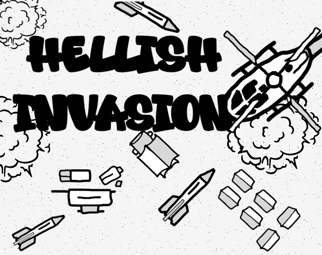
A small game jam game made in Odin.

A 3D endless runner game made in Unity Engine.
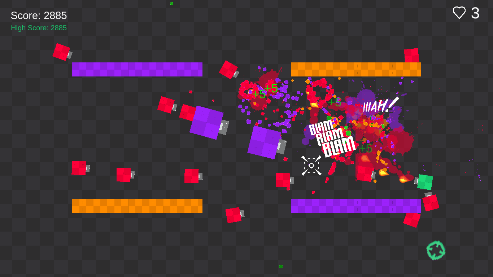
Every game dev should have atleast one TDS Game ;p

A clone of the popular iphone game Flappy Bird.
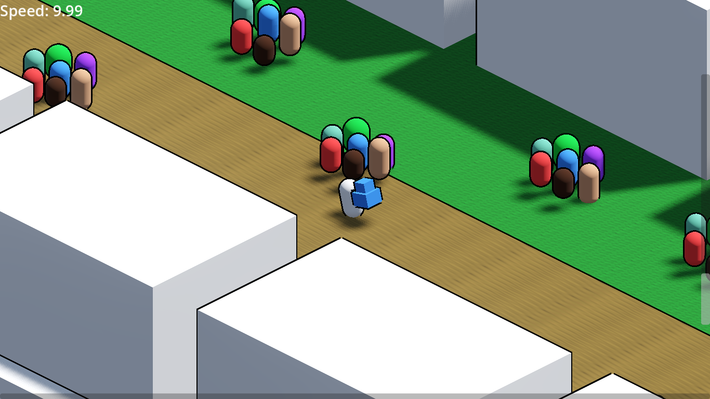
A Brackey's jam game made in a week with Godot Engine

A clone of the popular casual game Bingo
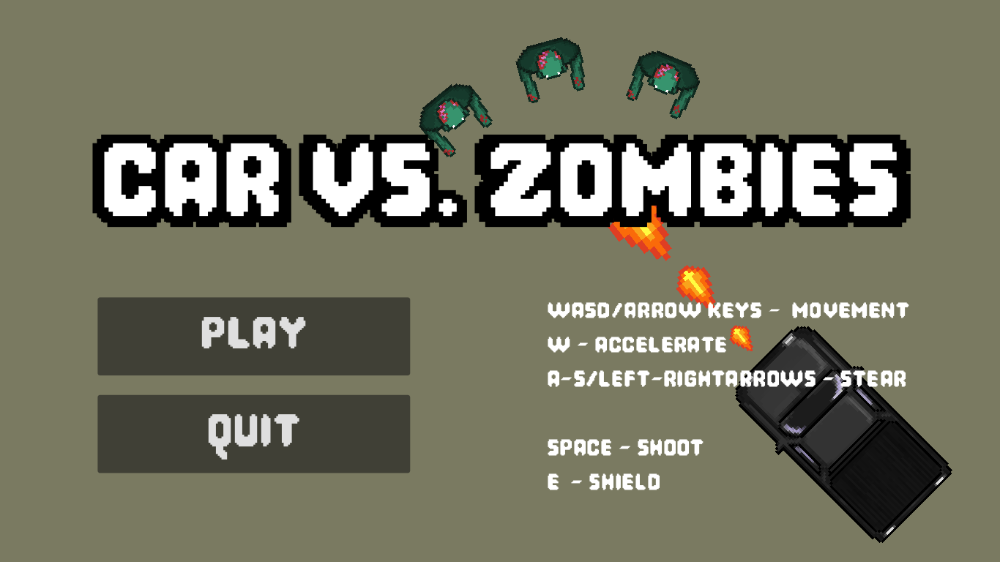
A game jam game made in Godot
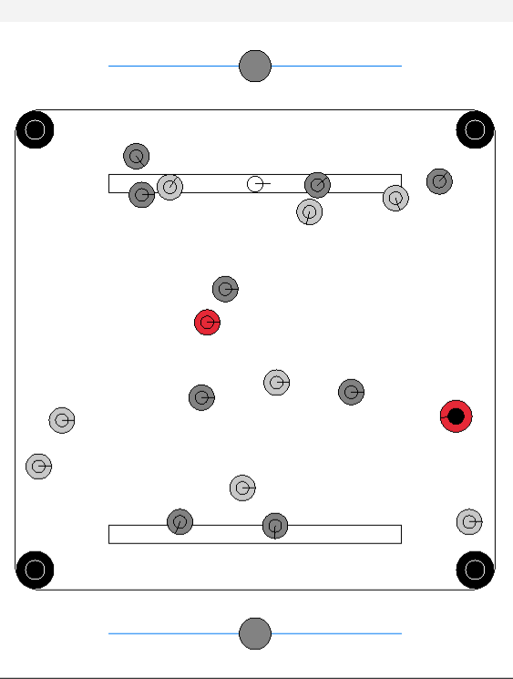
A digital recreation of the popular tabletop game usually played in Southern Asia.
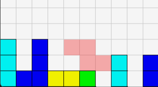
One of the greatest games on earth imo :)
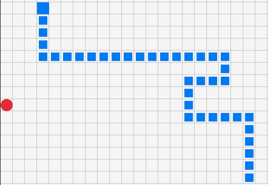
do snakes actually eat apples?
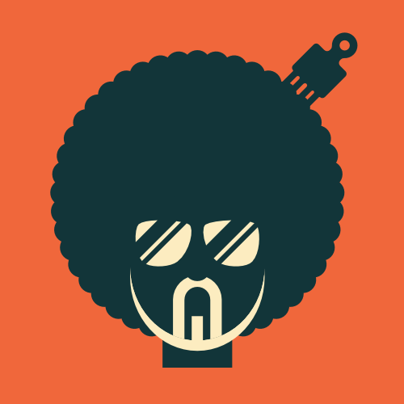
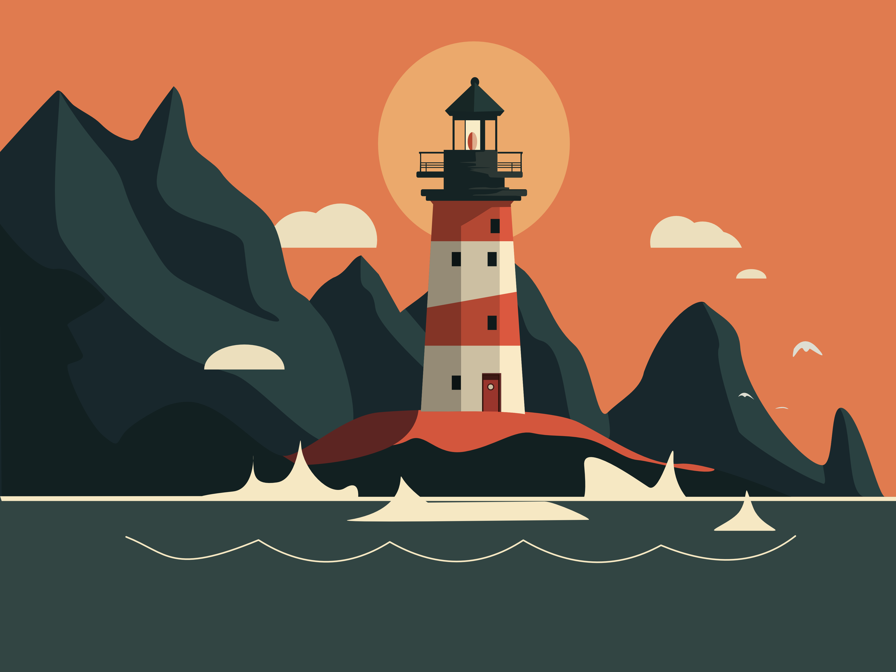
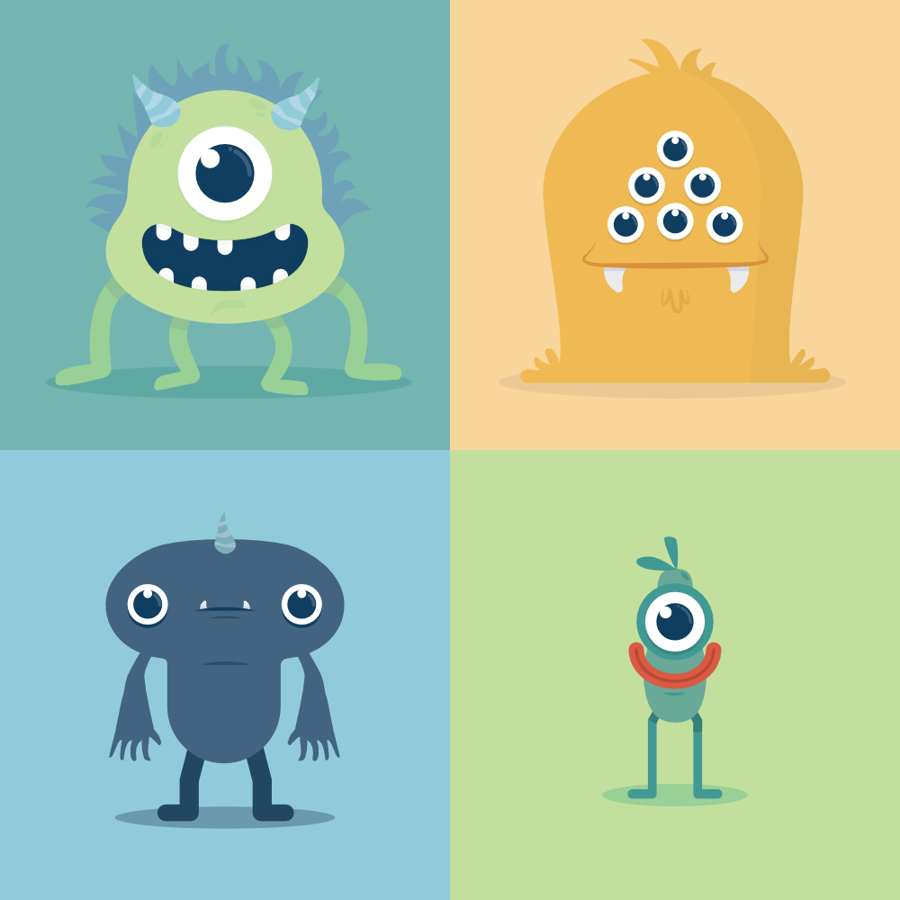
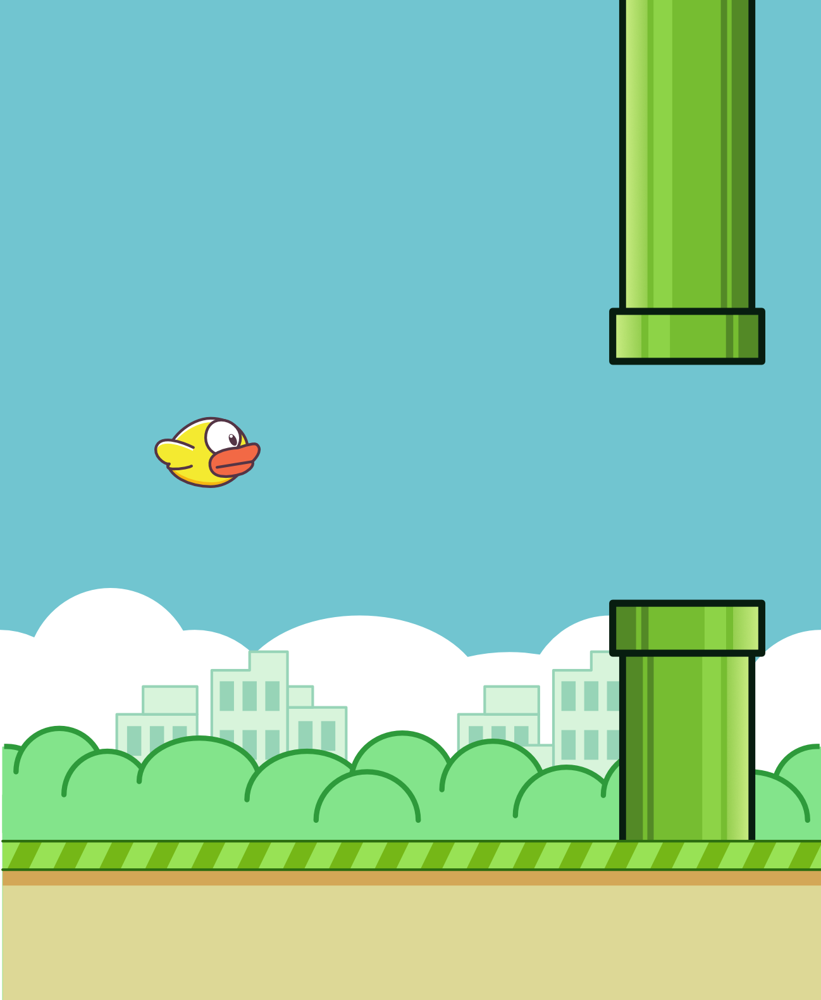
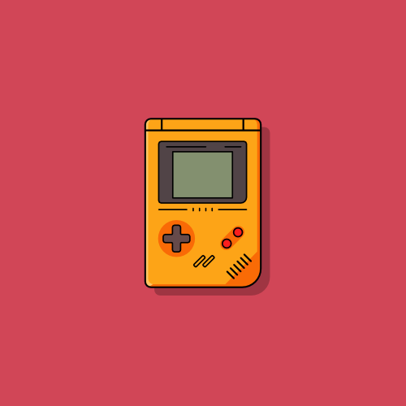
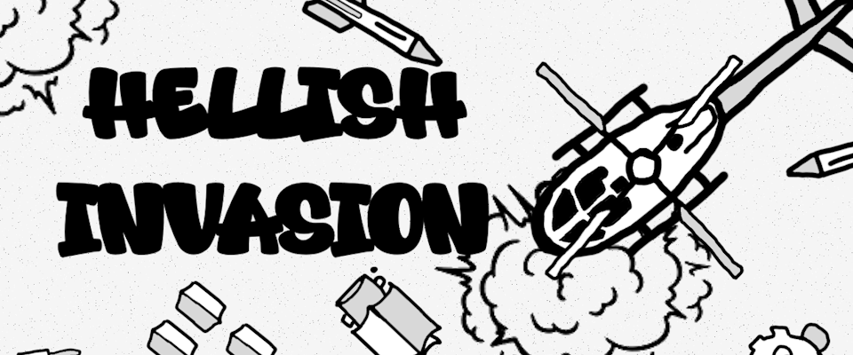
SFX
A quiet forest atmosphere with birds and wind.
Music
A minimal piano idea for background music.
SFX
Recorded rain hitting a glass window.
Music
A soft atmospheric synth pad.
“Simplicity is the ultimate sophistication.”
— Leonardo da Vinci
“An idiot admires complexity, a genius admires simplicity”
— Terry A. Devis
“Art is never finished, only abandoned.”
— Leonardo da Vinci
“የሰው ልጅ እውቀትን የሚማረው አንድም ከፊደል ገበታ 'ሀ' አልያም ከመከራ አዝመራ 'ዋ' ብሎ ነው”
— ሎሬት ፀጋዬ ገብረመድህን (Tsegaye Gabre-Medhin)
“It works on my machine.”
— Every single one of you, including me XD
“If life isn't fair for everyone, doesn't that make her fair for everyone?”
— Anonymous
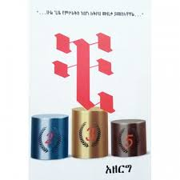
Reading
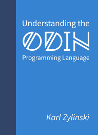
reading
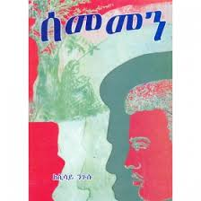
Want to Read

Finished

Finished

Finished

Finished

Finished
Finished
Games for jams and experimenting with The Odin Programming Language.
Art and Audio... Art (Vector Art) is going good so far. I'm trying to learn Reaper for audio.
Currently reading a few books on tech, philosophy, and fiction.
Available for hire! You can contact me anytime on telegram, email or phone number.
Last updated: March 2026